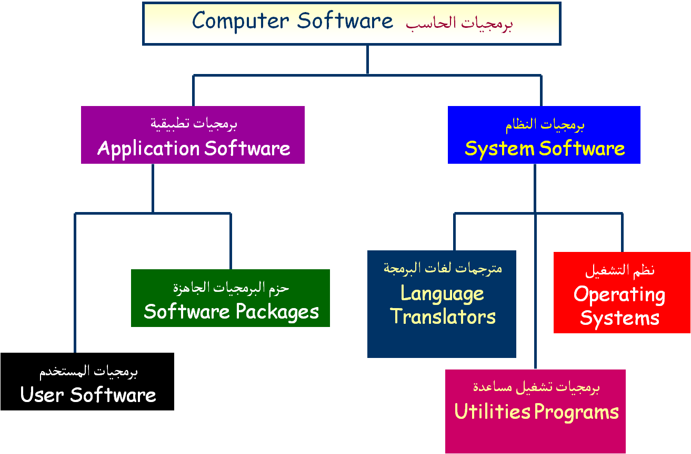

تتكون الحواسيب من مكونات برمجية تعمل جنبًا إلى جنب مع المكونات المادية. المكونات البرمجية تشمل أنظمة التشغيل والبرامج التطبيقية، وهي المسؤولة عن تشغيل الحاسوب والتحكم بوظائفه.

المكونات البرمجية هي مجموعة من البرامج والتطبيقات التي توجه عمل المكونات المادية. وتنقسم إلى نوعين:
تمكّن المستخدم من تشغيل الحاسوب والتحكم بالمكونات المادية، ومن أمثلتها:
برامج يستخدمها المستخدم لإنجاز المهام، وتشمل:
يعمل الحاسوب بفعالية من خلال التعاون بين الهاردوير (المكونات المادية) والسوفتوير (المكونات البرمجية). البرامج توجه الأجهزة لتنفيذ الأوامر، ولا يمكن لأيٍّ منهما العمل بمعزل عن الآخر.
مثال: عند استخدام لوحة المفاتيح لكتابة نص في برنامج Word، تقوم البرمجية بترجمة الضغطات إلى حروف تُعرض على الشاشة.
المكونات البرمجية تشمل أنظمة التشغيل والبرامج التي تُوجه المكونات المادية لأداء المهام. ويُعد التكامل بين الهاردوير والسوفتوير أساسًا لعمل الحاسوب، إذ لا يمكن لأحدهما العمل بدون الآخر.